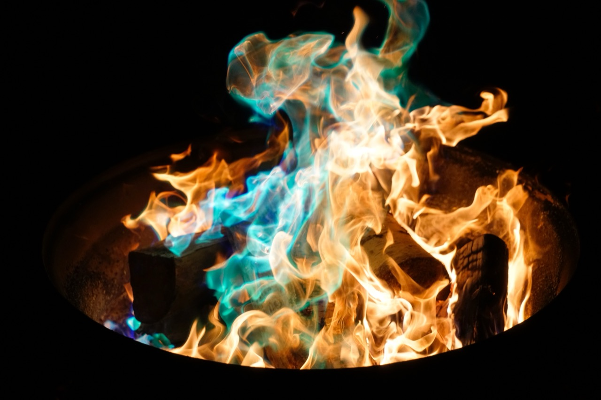
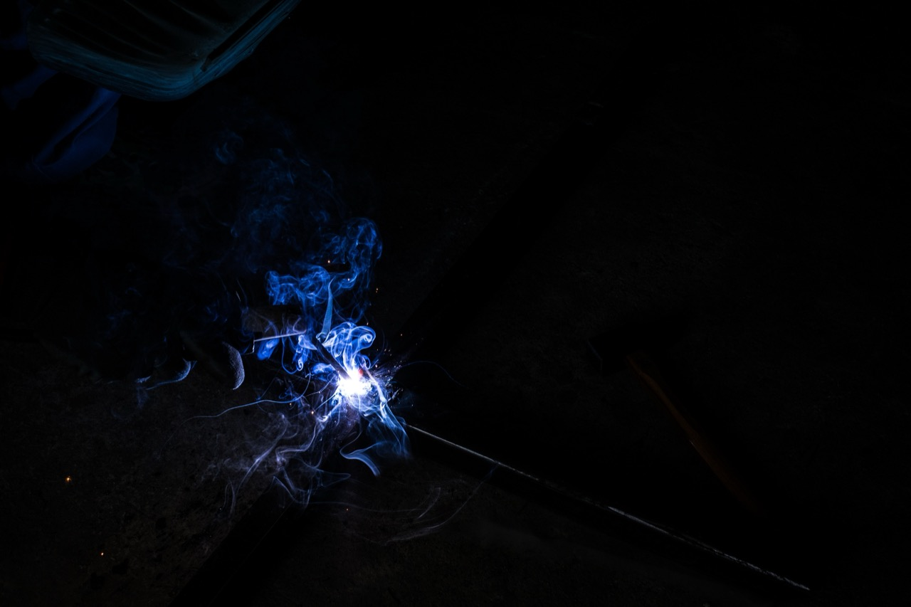
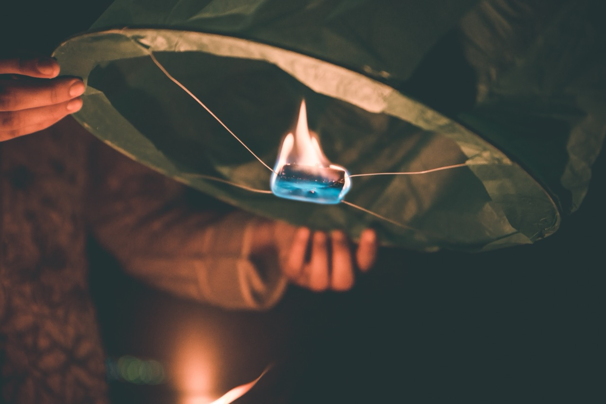

Blue Flame Wallpapers
In contemporary digital visual culture, the aesthetic category of blue flame imagery occupies a distinctive and appealing niche, drawing significant interest from digital content creators, designers, and individuals seeking atmospheric and visually striking background imagery. Blue flame wallpapers represent a specific intersection of natural phenomenon documentation, digital art creation, color aesthetics, and the technical demands of contemporary high-resolution digital display. These images combine the dramatic visual impact of flame with the particular psychological and aesthetic associations of blue coloration, creating imagery that suggests coolness, mystery, intensity, and technological sophistication simultaneously.
The technical characteristics of blue flame imagery derive from actual physical phenomena in combustion processes. Blue flames result from particular conditions in combustion where temperatures are sufficiently high and fuel is sufficiently clean that the flames emit primarily blue wavelengths of light. This occurs in contexts such as gas stove flames, certain chemical fires, and laboratory combustion. Photographers and digital artists documenting blue flames must understand the physical conditions that produce them, the technical requirements for capturing flame imagery successfully, and the post-processing techniques that enhance visual impact while maintaining visual plausibility.

The aesthetic appeal of blue flame imagery combines multiple visual elements. The movement and organic quality of flame creates visual dynamism and interest. The particular coloration of blue flames suggests coolness and intensity simultaneously, creating visual paradox that engages viewer attention. The contrast between bright flame and darker surrounding environment creates compositional drama. The transparency and luminosity of flames create distinctive light effects and interact with surrounding elements in visually complex ways. These combined elements explain the sustained visual interest in blue flame imagery across diverse viewer populations.
The creation of blue flame wallpapers employs multiple approaches. Documentary photography of actual blue flames captures real combustion phenomena with authenticity and specificity. This approach requires technical skill in capturing unstable flame phenomena, managing exposure and color temperature to accurately render the blue coloration, and framing compositions that maximize visual impact. The resulting images possess credibility and natural quality that viewers recognize as grounded in actual physical phenomenon. The unpredictability of flame provides compositional variation—no two instances of blue flame are identical, creating visual interest and novelty across multiple flame photographs.
Digital art creation techniques augment and supplement photographic documentation of blue flames. Digital artists create idealized or stylized flame imagery using graphics software, sometimes achieving effects that extend beyond what actual photography can capture. These digital creations might exaggerate flame intensity, enhance color saturation, create impossible flame configurations, or integrate blue flame elements into imagined environments. This digital creation approach allows for aesthetic refinement and creative elaboration beyond documentary accuracy, enabling visualization of fantastical flame scenarios.
Composite approaches combine photographic and digital techniques, integrating documented flame imagery into imagined or enhanced environmental contexts. A photograph of actual blue flame might be isolated from its original background and placed within a digitally created or enhanced environment. Multiple flame elements might be combined to create compositions more visually complex than any single documented instance. These composite approaches bridge documentary authenticity with creative elaboration, maintaining visual plausibility while achieving artistic vision exceeding what straightforward documentation could accomplish.

The cultural and psychological associations of blue flames contribute significantly to the aesthetic appeal of blue flame wallpapers. Blue coloration culturally suggests coolness, intelligence, technology, and sometimes melancholy or mystery. Yet flames inherently suggest heat, passion, intensity, and danger. The combination of blue coloration with flame imagery creates a visual paradox—suggesting cool intensity, technological passion, controlled danger. This paradoxical quality makes blue flame imagery psychologically and aesthetically interesting, engaging viewers' attention through subtle contradiction and visual complexity.
The application contexts for blue flame wallpapers are diverse. The imagery serves as computer desktop backgrounds, mobile device wallpapers, and various other digital platform backgrounds. The imagery appeals to individuals drawn to dark aesthetic sensibilities, technological and digital themes, gaming and entertainment cultures, and dramatic visual effects. The imagery also functions in commercial and professional contexts—advertising materials, graphic design projects, digital media productions, and other creative applications. The versatility of blue flame imagery across diverse application contexts explains the sustained demand for new and varied blue flame wallpaper content.
The technical requirements of contemporary high-resolution displays influence how blue flame wallpapers are created and optimized. Full HD displays (1920x1080) remain common, but 4K (3840x2160) and higher resolutions increasingly characterize cutting-edge digital displays. Wallpapers must be created at sufficient resolution to appear crisp and detailed when scaled to these resolutions. Color accuracy becomes important, as display technology increasingly supports wider color gamuts and more accurate color reproduction. The technical specifications of modern displays both constrain and enable sophisticated visual presentation of flame imagery, requiring that creators understand contemporary display technology.
The discovery path for consumers seeking blue flame wallpapers typically involves internet search, browsing wallpaper-specific websites, or exploration of creative platform communities like DeviantArt or Unsplash. The ease of digital distribution and the free or low-cost accessibility of quality wallpaper imagery has created abundant supply of blue flame content. Consumers can explore diverse approaches to blue flame aesthetic, compare styles and variations, and select imagery matching their particular preferences. This ready accessibility contrasts with historical contexts where acquiring distinctive visual imagery required substantially greater effort and expense.
The creative community producing blue flame wallpapers encompasses diverse practitioners and skill levels. Professional photographers and digital artists create high-quality imagery that circulates widely and generates appreciation and market value. Amateur photographers and digital enthusiasts contribute imagery created for personal use or community sharing. This diverse creative base ensures continuous generation of new blue flame content, maintaining novelty and variation within the aesthetic category. The democratization of digital image creation tools has enabled broader participation in wallpaper creation than would have been possible in earlier technological contexts.
The environmental and safety implications of creating blue flame documentation deserve mention. Photographers and artists documenting blue flames must do so safely, with appropriate precautions protecting against fire hazards and injury. Professional flame photography often occurs in controlled laboratory or studio environments where conditions can be carefully managed. Digital simulation and creation techniques provide alternatives to direct flame documentation, reducing safety risks and environmental resource consumption associated with creating actual blue flames for photographic purposes.
The aesthetic evolution of blue flame wallpapers reflects broader shifts in digital visual culture and design aesthetics. Earlier versions of blue flame imagery sometimes featured more saturated and artificial-looking coloration, reflecting limitations of earlier digital technology and aesthetic preferences of that era. Contemporary versions often emphasize more naturalistic color rendering and sophisticated compositional approaches, reflecting improvements in image capture and processing technology alongside evolved aesthetic sensibilities. This evolution demonstrates that even ostensibly simple visual categories like blue flame wallpapers reflect broader technological and cultural development.

The cultural significance of blue flame wallpapers as components of digital visual culture deserves recognition. Wallpapers function as aesthetic expression and personalization of digital devices, allowing individuals to surround themselves with imagery reflecting their aesthetic preferences and identity. The abundance of blue flame wallpapers reflects and reinforces particular aesthetic sensibilities—attraction to dramatic visual effects, interest in technological aesthetics, appreciation for the beautiful and dangerous. The prevalence of this imagery in digital culture subtly influences how contemporary viewers relate to flame, danger, technology, and visual intensity.
The relationship between blue flame wallpaper imagery and broader visual media representations deserves attention. Flame imagery appears throughout visual culture—films, video games, music videos, digital media. Blue flame specifically appears frequently in science fiction and technology-themed media, suggesting advanced technology, magical power, or significant energy. The circulation of blue flame imagery through diverse media creates visual literacy around the aesthetic, making viewers familiar with blue flame visual language and primed to appreciate documentation and creative elaboration of the aesthetic.
The intersection of blue flame wallpapers with gaming culture represents a significant application context. Many gamers appreciate dramatic and intense visual effects, including flame and fire imagery. Blue flames specifically appear in many video games as visual representations of magical fire, advanced weaponry, or powerful forces. Wallpapers featuring blue flames appeal to gaming communities and individuals drawn to gaming aesthetics. This intersection demonstrates how wallpaper imagery exists not in isolation but rather in conversation with broader visual culture and media consumption patterns.
The ongoing production and circulation of blue flame wallpapers demonstrates continued and sustained interest in this particular visual aesthetic. New variations, techniques, and creative approaches continue to emerge as digital artists explore the visual possibilities. The accessibility of blue flame wallpapers across diverse digital platforms and contexts ensures continued visibility and accessibility. The aesthetic category appears likely to maintain cultural relevance and visual interest for the foreseeable future, supporting continued creative exploration and documentation of blue flame imagery in its diverse forms and contexts.